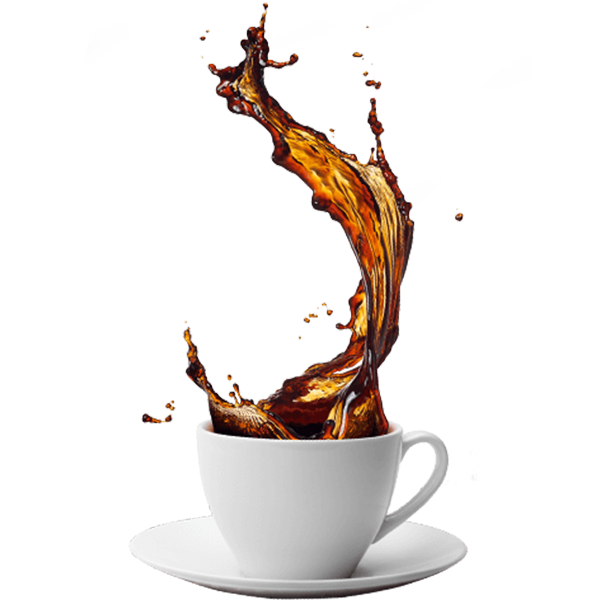

Sourcing with Respect
We pay well above market rates and visit every farm we buy from. Fair prices, long relationships, and beans picked at peak ripeness.

Our story
It began in 1988 when Antonio Rossi traded his carpenter's tools for a five-kilogram drum roaster and a tiny shop near the Duomo. His espresso became the morning ritual of the neighbourhood, and the secret recipe has been guarded ever since.
Today his children run the roastery and his grandchildren work the bar. We still roast in small batches, still cup every lot before it ships, and still believe coffee should connect people — to the land, to each other, and to the moment.
By the numbers
What guides us
We pay well above market rates and visit every farm we buy from. Fair prices, long relationships, and beans picked at peak ripeness.
Every batch follows a written roast curve, logged by hand and tasted at three stages. When it isn't right, we don't serve it.
From live jazz on Thursdays to cupping schools for local baristas, our café is a meeting place before it is a business.
Visit us
Whether you're in Florence or we ship to your home — experience coffee the way it was meant to taste.